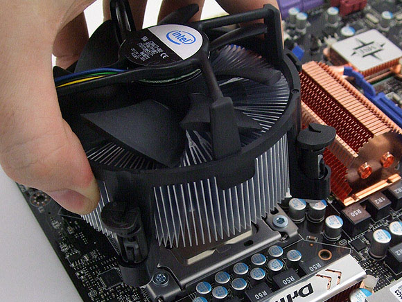

- CUPRINS:
- - Definiţie
- - Prezentare generală
- - Istorie
Definiţie
CPU-ul, cunoscut ca şi procesor sau microprocesor, este Unitatea Centrală de Prelucrare a calculatorului. Acesta executa toate instrucţiuniile unui program de calculator realizând operaţii aritmetice şi logice, precum şi operaţiunile de intrare / ieşire (I/O input/output) ale sistemului.
Procesorulul este adesea cunoscut ca şi creierul calculatorului. Tot felul de dispozitive folosesc un microprocesor, includând calculatorul, laptop-ul, tabletele, telefoanele... pana şi televizorul tău cu ecran subţire. Forma, designul şi implementarea microprocesoarelor s-au schimbat de-a lungul istoriei lor, dar funcţia de baza a ramas la fel.
Nota: Toate calculatoarele au nevoie de microprocesor.
Prezentare generala
Imaginea de mai jos este un exemplu a ceea ce reprezintă partea de sus şi partea de jos a unui microprocesor. Microprocesorul este plasat şi protejat într-o capsulă specială, numită CPU socket, ce se găseşte pe placa de bază. Microprocesoarele produc căldură, astfel ele sunt acoperite de un radiator şi un ventilator pentru a le menţine reci şi pentru a funcţiona fără probleme.
Microprocesor |
CPU socket |
Radiator & Ventilator |
|---|---|---|
 |
 |
Istorie
Microprocesorul a fost dezvoltat pentru prima oara la Intel cu ajutorul lui Ted Hoff si alţii la începutul anilor 1970. Primul procesor lansat de Intel a fost procesorul 4004, prezentat în imaginea din dreapta.
Vedeţi evoluţia: Istoria CPU-ului